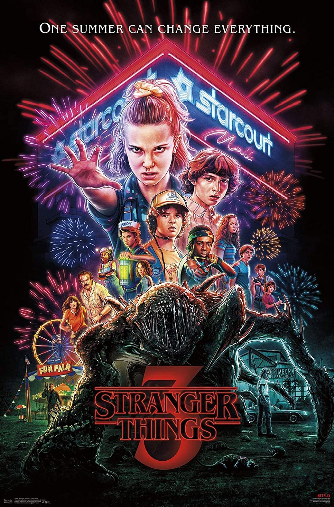

Three Season Summary
WARNING: May Contain Spoilers
Season 1: The Disappearance of Will Byers

Set in 1983, Season 1 begins with the mysterious disappearance of 12-year-old Will Byers. As his friends search for him, they encounter a girl with a shaved head and supernatural powers—known only as Eleven. Meanwhile, Will’s mother Joyce believes he’s communicating with her through lights, and Chief Hopper uncovers a conspiracy tied to Hawkins National Laboratory. The season ends with Will being rescued from the Upside Down, but he’s clearly not the same.
Season 2: Shadows from the Upside Down
A year later, in 1984, the gang is trying to return to normal life—but Will continues to have visions of a giant, shadowy creature. As the threat of the Upside Down grows stronger, Eleven goes on a journey to learn about her past and meets others like her. The group battles a new breed of monsters called Demodogs and faces the Mind Flayer, a more dangerous entity from the Upside Down. In the end, Eleven closes the gate, but evil still lingers beneath the surface.
Season 3: The Battle of Starcourt
In Stranger Things Season 3, set during the summer of 1985, the kids of Hawkins navigate growing up, relationships, and the excitement of the new Starcourt Mall, which secretly houses a Russian lab attempting to reopen the gate to the Upside Down. Meanwhile, the Mind Flayer returns in a more terrifying form, possessing townspeople—including Billy—to build a monstrous new body. As strange events unfold, the group bands together once again to confront the supernatural threat, culminating in a battle beneath the mall that ends with Eleven losing her powers and Hopper seemingly sacrificing himself—though a post-credits scene hints he may still be alive.